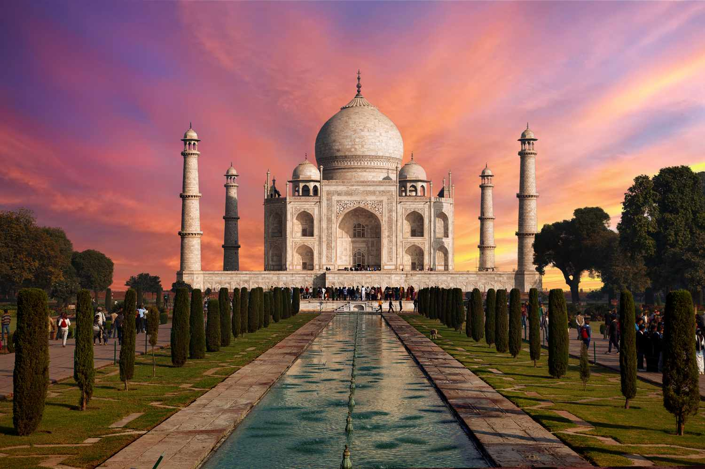

The Symbol of Eternal Love

The Taj Mahal is one of the most magnificent monuments in the world and a true masterpiece of Mughal architecture. It was built by Emperor Shah Jahan in memory of his beloved wife Mumtaz Mahal, symbolizing eternal love and devotion.
Located in Agra, Uttar Pradesh, India, the Taj Mahal stands on the banks of the Yamuna River. The construction began in 1632 and took around 20 years to complete with the help of over 20,000 skilled artisans.
The monument is made of pure white marble and is decorated with intricate carvings, precious stones, and calligraphy. Its perfect symmetry and stunning beauty make it one of the Seven Wonders of the World.
The Taj Mahal is also a UNESCO World Heritage Site and attracts millions of tourists every year. It represents India’s rich history, culture, and architectural brilliance.
The Taj Mahal is not just a monument, but a symbol of love, sacrifice, and artistic excellence. It reflects the peak of Mughal architecture, combining elements of Persian, Islamic, and Indian styles.
It also shows the power and wealth of the Mughal Empire during the 17th century. Today, it stands as a cultural icon of India and a global heritage site admired worldwide.